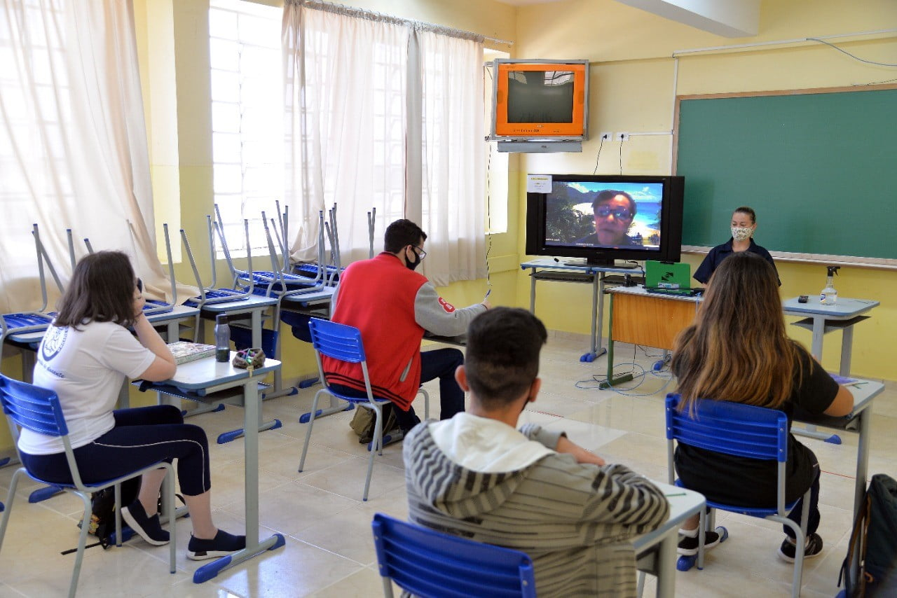

Caracteristicas do Colegio Julio Szymanski
-
Educação Integral: O colégio oferece educação completa desde a Educação Infantil até o Ensino Médio.
-
Atividades Extracurriculares: Inclui uma variedade de atividades como música, dança, teatro, esportes e artes.
-
Cursos Técnicos e Profissionalizantes: Dependendo da disponibilidade, pode oferecer cursos que preparam os alunos para o mercado de trabalho.
-
Infraestrutura: Geralmente possui uma infraestrutura adequada para suportar atividades pedagógicas e culturais, incluindo laboratórios, bibliotecas e espaços para atividades físicas e culturais.
-
Parcerias e Eventos: Participa e organiza eventos culturais e educacionais em parceria com diversas instituições, como o Consulado Geral da Polônia e a Prefeitura.
Temos também
- Biblioteca
- Banda Escola
- Clube de Esportes
- Sala de Informatica
- Curso de Linguas
- Mecanografica
oferece uma variedade de cursos e atividades educacionais. A escola é conhecida por sua abordagem integral e seu compromisso com o desenvolvimento dos alunos. Embora os cursos específicos possam variar, aqui estão alguns dos principais tipos de cursos e atividades que a instituição geralmente oferece:
Educação Infantil: Programas voltados para o desenvolvimento inicial das crianças, com foco em aprendizado e socialização.
Ensino Fundamental: Abarca disciplinas básicas como Língua Portuguesa, Matemática, Ciências, História, Geografia e outras, preparando os alunos para o ensino médio.
Ensino Médio: Inclui preparações para exames como o Enem e vestibulares, com disciplinas aprofundadas e suporte para escolha de carreiras futuras.
Educação Integral: Programas que podem incluir atividades extracurriculares, como esportes, artes, e projetos sociais, promovendo o desenvolvimento completo dos alunos.
Cursos Técnicos: Algumas escolas oferecem cursos técnicos em áreas específicas, como informática e administração, dependendo da demanda e infraestrutura.
Para obter informações detalhadas e atualizadas sobre os cursos e programas específicos oferecidos pelo Colégio Julio Szymanski em Araucária, é recomendável consultar o site oficial da escola ou entrar em contato diretamente com a administração da instituição. Eles poderão fornecer informações precisas sobre a grade curricular atual e as atividades disponíveis.
